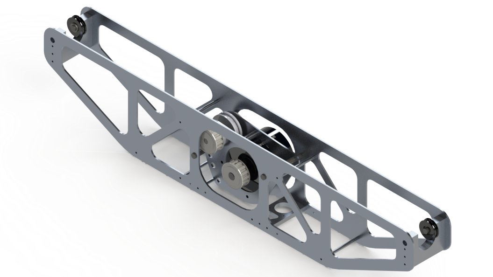
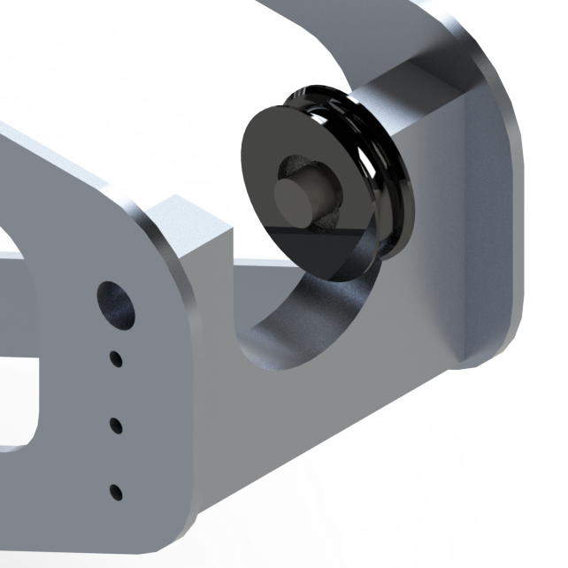
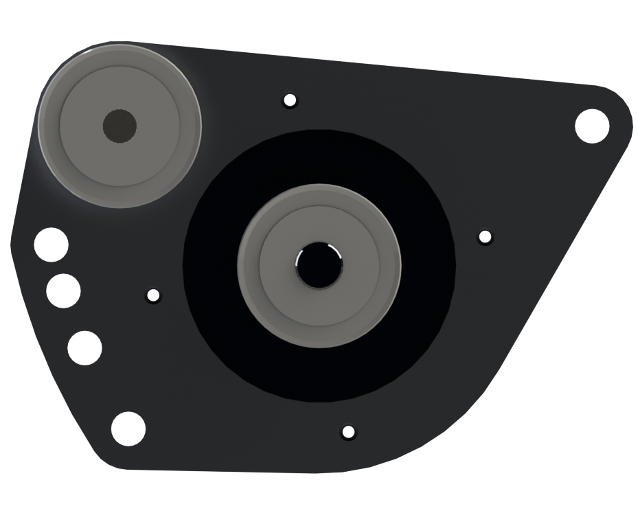

Cable-cam
Alpinax, June 2016 - July 2016 
The cable-cam was designed to carry a camera at high speeds on a high-tensioned line. The purpose of this mechanism was to get repeatable filming through dense areas where drones cannot fly. Potential uses included filming dirt bikers through the woods, getting repeated shots of cars, and movie action sequences. In these applications, having a high speed camera is a must, so the cable-cam needed to have excellent performance specifications. My boss gave me a list of design requirements, including:
- Cable-cam must have a top speed of 40 mph (17.9 m/s)
- Cable-cam must have a top acceleration of 0.5 G
- Cable-cam must be able to carry a 5 kg camera gimbal
- Cable-cam must be able to travel on a 500 ft line
- Cable-cam must be able to quickly mount and dismount from the line
- Cable-cam must be aesthetically pleasing
 |
The spreadsheet above shows an example of the physics equations I used in Excel to find different parameters of the system. The equations were determined using statics and dynamics. While these were ideal models, they helped set up the forces and torques used to design the cable-cam. These equations also aided in:
- Selecting a motor and power transmission with enough torque and RPM
- Selecting a cable material to withstand the tension force
- Determining sizes for the drive wheel and the guide wheels
|  |
All of the custom components were designed to be manufactured, either by mill, waterjet cutter, or lathe, and toleranced accordingly. These custom parts connected togther using off-the-shelf fastners. For example, the "U" bracket was designed to allow the cable-cam to hook . My boss wanted the bracket to be milled without s CNC mill to avoid outsourcing costs, so it was made without any external fillets. Other custom parts include the camera adapter, the external frame, and the motor subassembly frame, all to be milled out of 6061 aluminum for weight and structural concerns.
|  |
The motor subassembly was designed to enable multiple deflection angles on the tensioned line, allowing for adjustable traction at different line tensions. The timing belt could be adjusted from 2:1, 1:1, and 1:2 for different performance characteristics. The motor attached was a high torque brushless DC motor. I did extensive research of different hobby-grade motors and industrial BLDC motors to find the right one with the most fitting performance curves.
 |
To ensure the validity of my designs, I used the statics simulation package in SolidWorks. The forces were setup according to the physics equations calculated at the start of the project.